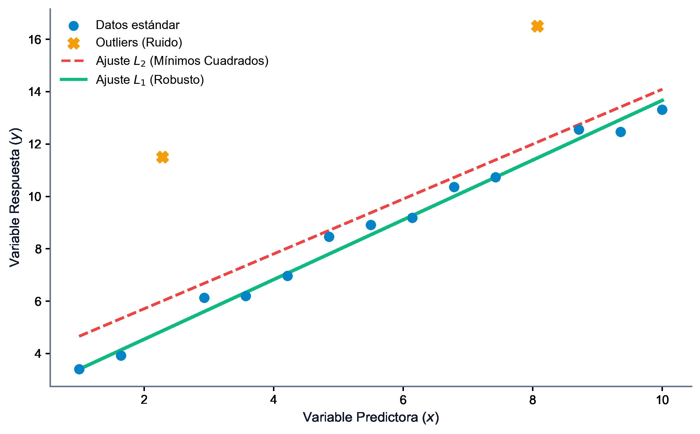

6 Optimización en Ciencia de Datos: Regresión y SVM
La optimización matemática es el motor silencioso que impulsa la ciencia de datos y el aprendizaje automático (machine learning). Desde el ajuste clásico de una recta hasta el entrenamiento de redes neuronales profundas, el proceso de “aprendizaje” a partir de datos consiste en formular una función de pérdida que mide la discrepancia entre el modelo y la realidad, y resolver el problema de optimización asociado para hallar los parámetros óptimos. En este capítulo, estudiaremos cómo la optimización no lineal y la programación entera mixta dan respuesta a problemas clave: el ajuste de regresiones en diferentes normas, la selección óptima de variables, la formulación de las Máquinas de Vectores de Soporte (SVM) y la generación de explicaciones contrafácticas para modelos de caja negra.
Al finalizar este capítulo, serás capaz de:
- Formular y resolver el problema de ajuste de curvas lineales y cuadráticas bajo diferentes normas (\(\ell_1\), \(\ell_2\), \(\ell_\infty\)) usando programación lineal y cuadrática.
- Modelar la selección de características (feature selection) en regresión múltiple utilizando variables binarias y restricciones lógicas.
- Deducir la formulación de SVM de margen máximo y margen blando, y comprender la importancia de su problema dual y el truco del kernel.
- Comprender la necesidad de explicabilidad en ciencia de datos y formular el problema biobjetivo para la búsqueda de contrafácticos.
- Formular y resolver el problema de búsqueda de contrafácticos en regresión logística como un modelo de optimización cuadrático entero mixto (MIQP).
- Implementar en Python modelos de regresión multivariante y clasificadores SVM utilizando las librerías
CVXPYyscikit-learn.
6.1 Introducción a la Optimización en Aprendizaje Automático
El proceso de entrenamiento de un modelo de aprendizaje automático consiste en ajustar los parámetros de una función hipótesis \(f(x; w)\) para modelar un patrón en un conjunto de datos, siguiendo los principios y metodologías analíticas del aprendizaje estadístico clásico (Hastie, Tibshirani, y Friedman 2009). Las principales aplicaciones de la optimización en este ámbito son:
- Estimación puntual: Maximizar la función de verosimilitud (MLE) o minimizar el error cuadrático medio.
- Regularización: Añadir términos de penalización en la función objetivo (normas \(\ell_1\) o \(\ell_2\)) para controlar la complejidad del modelo y evitar el sobreajuste (overfitting).
- Clasificación: Maximizar el margen de separación entre clases o minimizar la pérdida de bisagra (hinge loss).
6.2 El Problema de Ajuste de Datos en Diferentes Normas
Dada una muestra de observaciones de dos variables, \(x\) e \(y\), el ajuste de datos consiste en encontrar una función \(f(x)\) tal que \(y_i \approx f(x_i)\) para toda observación \(i = 1, \dots, n\).
Consideremos una muestra de \(n = 19\) observaciones:
| \(x\) | 0.0 | 0.5 | 1.0 | 1.5 | 1.9 | 2.5 | 3.0 | 3.5 | 4.0 | 4.5 | 5.0 | 5.5 | 6.0 | 6.6 | 7.0 | 7.6 | 8.5 | 9.0 | 10.0 |
|---|---|---|---|---|---|---|---|---|---|---|---|---|---|---|---|---|---|---|---|
| \(y\) | 1.0 | 0.9 | 0.7 | 1.5 | 2.0 | 2.4 | 3.2 | 2.0 | 2.7 | 3.5 | 1.0 | 4.0 | 3.6 | 2.7 | 5.7 | 4.6 | 6.0 | 6.8 | 7.3 |
6.2.1 Regresión Lineal Clásica (Norma \(\ell_2\))
La regresión lineal clásica asume que la relación toma la forma de una recta \(y = a + b x + \epsilon\). Los parámetros \(a\) (intersección) y \(b\) (pendiente) se obtienen minimizando el error cuadrático medio: \[ \min_{a, b} \sum_{i=1}^n (a + b x_i - y_i)^2 \] Las ecuaciones normales obtenidas al anular el gradiente nos proporcionan la conocida recta por mínimos cuadrados ordinarios (MCO): \[ Y = 0.4261 + 0.6108 x \]
6.2.2 Ajustes en Normas Robustas (\(\ell_1\) y \(\ell_\infty\))
Cuando los datos contienen valores atípicos (outliers) o errores de medición severos (como el punto \((5.0, 1.0)\) en nuestra muestra), la norma cuadrática \(\ell_2\) se ve fuertemente distorsionada. Proponemos alternativas más robustas:
- Norma \(\ell_1\) (Desviaciones Absolutas): Minimiza la suma de los valores absolutos de los residuos: \[ \min_{a, b} \sum_{i=1}^n |a + b x_i - y_i| \]
- Norma \(\ell_\infty\) (Minimax): Minimiza el máximo error cometido: \[ \min_{a, b} \max_{i=1, \dots, n} |a + b x_i - y_i| \]

Podemos formular la minimización en normas \(\ell_1\) y \(\ell_\infty\) como problemas de programación lineal continua equivalentes mediante la introducción de variables auxiliares de error:
- Formulación para la Norma \(\ell_1\): \[ \begin{aligned} \min_{a, b, e} \quad & \sum_{i=1}^n e_i \\ \text{sujeto a} \quad & a + b x_i - y_i \le e_i, \quad i = 1, \dots, n \\ & -(a + b x_i - y_i) \le e_i, \quad i = 1, \dots, n \\ & e_i \ge 0, \quad i = 1, \dots, n \end{aligned} \]
- Formulación para la Norma \(\ell_\infty\): \[ \begin{aligned} \min_{a, b, z} \quad & z \\ \text{sujeto a} \quad & a + b x_i - y_i \le z, \quad i = 1, \dots, n \\ & -(a + b x_i - y_i) \le z, \quad i = 1, \dots, n \\ & z \ge 0 \end{aligned} \]
Al resolver estos modelos sobre los datos de nuestra muestra, se aprecian los siguientes ajustes lineales y cuadráticos:
- Ajuste lineal \(\ell_1\): \(y = 0.6375x + 0.5812\) (con un error total de \(11.46\) y un máximo error de \(2.77\) en \(x=5.0\)).
- Ajuste lineal \(\ell_\infty\): \(y = 0.6245x - 0.4000\) (con un error total de \(19.95\) y un máximo error minimizado de \(1.725\) en \(x=3.5, 7.0\)).
- Ajuste cuadrático \(\ell_1\): \(y = 0.0337x^2 + 0.2945x + 0.9823\).
- Ajuste cuadrático \(\ell_\infty\): \(y = 0.1250x^2 - 0.6250x + 2.4750\) (máximo error de \(1.475\)).
6.3 Regresión Lineal Múltiple y Selección de Características
Cuando disponemos de \(m\) variables independientes \(X_1, \dots, X_m\), el modelo es: \[ Y = \beta_0 + \beta_1 X_1 + \dots + \beta_m X_m + \epsilon \]
6.3.1 Selección de Variables mediante Programación Entera Mixta
En presencia de múltiples variables explicativas, a menudo deseamos construir un modelo disperso (sparse) que solo incluya un subconjunto óptimo de características. Definimos variables binarias de decisión \(\delta_j \in \{0, 1\}\) para indicar si la característica \(j\) participa en el modelo (\(\beta_j \neq 0\)). Imponemos restricciones de “Gran M” utilizando cotas inferiores \(\underline{\beta}_j\) y superiores \(\overline{\beta}_j\) sobre el valor físico de los coeficientes: \[ \underline{\beta}_j \delta_j \le \beta_j \le \overline{\beta}_j \delta_j, \quad j = 1, \dots, m \] Esto nos permite plantear restricciones estructurales complejas:
- Número máximo de variables seleccionadas: \[ \sum_{j=1}^m \delta_j \le M_{\max} \]
- Relación de exclusión mutua entre variables \(i\) y \(j\): \[ \delta_i + \delta_j \le 1 \]
- Inclusión obligatoria de al menos una entre \(i\) y \(j\): \[ \delta_i + \delta_j \ge 1 \]
El problema resultante es un modelo Entero Cuadrático Mixto (MIQP).
6.4 Máquinas de Vectores de Soporte (SVM)
El objetivo de una SVM es clasificar observaciones binarias \(y_i \in \{-1, +1\}\) mediante un hiperplano \(w^T x + b = 0\) que maximice el margen de separación (la distancia al punto más cercano de cada clase).
La distancia del punto más cercano al hiperplano es \(1/\|w\|_2\). Maximizar el margen \(2/\|w\|_2\) equivale a minimizar su recíproco al cuadrado, dando lugar al problema cuadrático convexo restringido: \[ \begin{aligned} \min_{w, b} \quad & \frac{1}{2} \|w\|_2^2 \\ \text{sujeto a} \quad & y_i (w^T x_i + b) \ge 1, \quad i = 1, \dots, n \end{aligned} \]
Si los datos no son perfectamente separables, introducimos variables de holgura \(\xi_i \ge 0\) que miden la penetración de un punto en el margen o su mala clasificación. El parámetro de regularización \(C > 0\) controla el equilibrio entre la maximización del margen y la penalización de errores: \[ \begin{aligned} \min_{w, b, \xi} \quad & \frac{1}{2} \|w\|_2^2 + C \sum_{i=1}^n \xi_i \\ \text{sujeto a} \quad & y_i (w^T x_i + b) \ge 1 - \xi_i, \quad i = 1, \dots, n \\ & \xi_i \ge 0, \quad i = 1, \dots, n \end{aligned} \]
Planteando las condiciones de optimalidad de la Lagrangiana, podemos reescribir el problema en su forma dual: \[ \begin{aligned} \max_{\alpha} \quad & \sum_{i=1}^n \alpha_i - \frac{1}{2} \sum_{i=1}^n \sum_{j=1}^n \alpha_i \alpha_j y_i y_j (x_i^T x_j) \\ \text{sujeto a} \quad & 0 \le \alpha_i \le C, \quad i = 1, \dots, n \\ & \sum_{i=1}^n \alpha_i y_i = 0 \end{aligned} \]
- Vectores de soporte: Los puntos con multiplicador óptimo \(\alpha_i > 0\) son los únicos que determinan la posición del hiperplano óptimo.
- El Truco del Kernel: Dado que los datos de entrada solo intervienen en el problema dual mediante el producto escalar \(x_i^T x_j\), podemos reemplazar este término por una función de coincidencia kernel \(K(x_i, x_j) = \phi(x_i)^T \phi(x_j)\). Esto permite proyectar los datos de forma implícita a un espacio de características infinito o de gran dimensión (como el kernel Gaussiano RBF), logrando fronteras de decisión altamente no lineales en el espacio original sin incurrir en costes computacionales prohibitivos.
6.5 Explicabilidad y Contrafácticos (Counterfactuals)
El auge de los modelos de caja negra (redes neuronales, random forests) ha motivado el desarrollo de técnicas de explicabilidad. Una explicación contrafáctica responde a la pregunta: “¿Qué cambios mínimos debe realizar una persona \(x^0\) clasificada en la clase negativa para cambiar la predicción a la clase positiva?”
6.5.1 Formulación del Problema de Optimización
Dado un clasificador \(P: \mathcal{X} \to [0, 1]\) que devuelve la probabilidad de clase positiva, y un perfil \(x^0\) con \(P(x^0) < \tau\) (negativo), buscamos un nuevo perfil factible \(x\) que minimice la función de coste del cambio \(C(x^0, x)\) bajo la condición de cruzar el umbral de clasificación: \[ \begin{aligned} \min_{x \in \mathcal{X}(x^0)} \quad & C(x^0, x) \\ \text{sujeto a} \quad & P(x) \ge \nu \end{aligned} \] - Contrafácticos Endógenos: El conjunto de búsqueda se restringe a muestras reales de la base de datos ya clasificadas como positivas. Su modelización es discreta (localización de instalaciones). - Contrafácticos Exógenos: El contrafáctico generado es un perfil sintético en un espacio continuo, resolviéndose mediante optimización continua o entera mixta.
6.5.2 Formulación Entera Mixta para un Clasificador de Regresión Logística
En la regresión logística, la probabilidad de clase positiva es \(\varphi(w^T x - b)\) con \(\varphi(t) = 1/(1+e^{-t})\). La restricción de probabilidad \(P(x) \ge \nu\) se linealiza como: \[ w^T x - b \ge \ln\left(\frac{\nu}{1 - \nu}\right) \] Si la función de coste combina la distancia euclídea (\(\ell_2\)) y una penalización por el número de características modificadas (\(\ell_0\)), el modelo se formula como un problema MIQP: \[ \begin{aligned} \min_{x, \delta} \quad & \sum_{k=1}^K (x_k^0 - x_k)^2 + \lambda \sum_{k=1}^K \delta_k \\ \text{sujeto a} \quad & \sum_{k=1}^K w_k x_k - b \ge \ln\left(\frac{\nu}{1 - \nu}\right) \\ & -M_k \delta_k \le x_k^0 - x_k \le M_k \delta_k, \quad k = 1, \dots, K \\ & x_k = x_k^0, \quad \forall k \in \mathcal{K}_{\text{inmutable}} \\ & \delta_k \in \{0, 1\}, \quad k = 1, \dots, K \end{aligned} \]
6.6 Implementación Práctica en Python
El siguiente script completo implementa los ajustes de datos univariantes utilizando las normas \(\ell_1, \ell_2, \ell_\infty\), y formula el clasificador SVM de margen blando en 2D:
import cvxpy as cp
import numpy as np
# 1. Datos del ajuste de curvas
x_data = np.array([0.0, 0.5, 1.0, 1.5, 1.9, 2.5, 3.0, 3.5, 4.0, 4.5, 5.0, 5.5, 6.0, 6.6, 7.0, 7.6, 8.5, 9.0, 10.0])
y_data = np.array([1.0, 0.9, 0.7, 1.5, 2.0, 2.4, 3.2, 2.0, 2.7, 3.5, 1.0, 4.0, 3.6, 2.7, 5.7, 4.6, 6.0, 6.8, 7.3])
# Variables de decision para la recta y = a + bx
a = cp.Variable()
b = cp.Variable()
# --- Ajuste L2 (Minimos Cuadrados Ordinarios) ---
cost_l2 = cp.sum_squares(a + b * x_data - y_data)
prob_l2 = cp.Problem(cp.Minimize(cost_l2))
prob_l2.solve()
print("Recta L2 (MCO):")
print(f" y = {a.value:.4f} + {b.value:.4f}x")
# --- Ajuste L1 (Desviaciones Absolutas - Robustez) ---
cost_l1 = cp.sum(cp.abs(a + b * x_data - y_data))
prob_l1 = cp.Problem(cp.Minimize(cost_l1))
prob_l1.solve()
print("\nRecta L1:")
print(f" y = {a.value:.4f} + {b.value:.4f}x")
# --- Ajuste L_infinito (Minimax - Minimo Error Maximo) ---
cost_linf = cp.norm(a + b * x_data - y_data, "inf")
prob_linf = cp.Problem(cp.Minimize(cost_linf))
prob_linf.solve()
print("\nRecta L_infinito:")
print(f" y = {a.value:.4f} + {b.value:.4f}x")
# 2. Formulacion Primal de SVM de Margen Blando
np.random.seed(42)
X_svm = np.vstack([np.random.randn(10, 2) - 2, np.random.randn(10, 2) + 2])
y_svm = np.array([-1]*10 + [1]*10)
m, d = X_svm.shape
w = cp.Variable(d)
intercept = cp.Variable()
xi = cp.Variable(m)
C = 1.0 # Parametro de penalizacion
objetivo_svm = cp.Minimize(0.5 * cp.sum_squares(w) + C * cp.sum(xi))
restricciones_svm = [
y_svm[i] * (X_svm[i] @ w + intercept) >= 1 - xi[i] for i in range(m)
] + [xi >= 0]
prob_svm = cp.Problem(objetivo_svm, restricciones_svm)
prob_svm.solve()
print("\nHiperplano Separador SVM:")
print(f" w = {w.value}")
print(f" b = {intercept.value:.4f}")